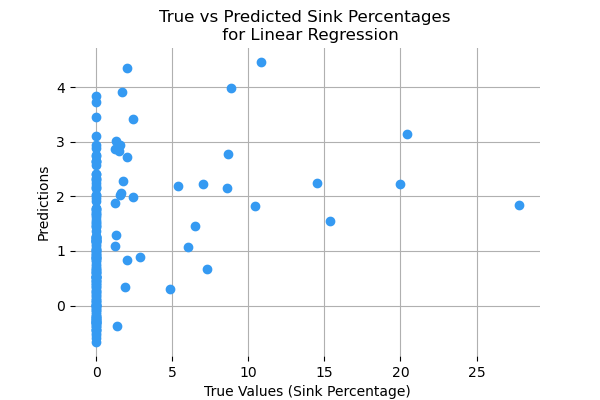
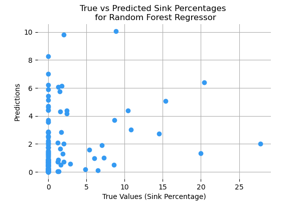
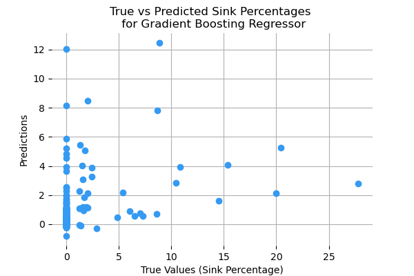

Original Regression Approach:
The original goal of the project was to predict convoys' exact sink percentages through machine learning regression techniques.
Linear Regression, Random Forest Regressor, and Gradient Boosting Regressor models were deemed the most applicable models in this first
approach. A link to the initial notebook with these preliminary results can be found
here.
Below are the results for the three models first tested. Although no optimization was done to improve the models, the extremely low test score results
indicate a regression approach is not feasible.
| Linear Regression |
|---|
| Train Score (R2) | 0.1197 |
| Test Score (R2) | 0.0947 |
| Intercept | 1.1144 |
| K-Fold Train Score (Mean R2) | 0.1189 |
| K-Fold Test Score (Mean R2) | 0.0480 |
| Random Forest Regressor |
|---|
| Train Score (R2) | 0.8609 |
| Test Score (R2) | 0.0282 |
| Mean Squared Error | 13.9292 |
| K-Fold Train Score (Mean R2) | 0.8615 |
| K-Fold Test Score (Mean R2) | -0.1785 |
| Gradient Boosting Regressor |
|---|
| Train Score (R2) | 0.8108 |
| Test Score (R2) | 0.0707 |
| Mean Squared Error | 13.3208 |
| K-Fold Train Score (Mean R2) | 0.7650 |
| K-Fold Test Score (Mean R2) | -0.2243 |



All three regression models underperformed on the test data, highlighting their weak predictive power.
Linear Regression barely improved over a naive baseline (train R² 0.1197 vs. test R² 0.0947), while Random Forest
and Gradient Boosting appeared to overfit the data (train R² ≈0.86 and mean accuracy ≈0.81 vs. test R² 0.0282 and mean accuracy 0.0707).
Combined with outliers where convoys suffered heavy losses and the many unmodeled wartime factors (weather, night/day, U-boat tactics, etc.),
predicting a precise sink percentage is unrealistic. Going forward, the target variable will be switched to a binary value of 0
(no ships sunk) or 1 (at least one ship sunk). This new focus will aim at identifying high-risk convoys rather than estimating exact sink percentages.